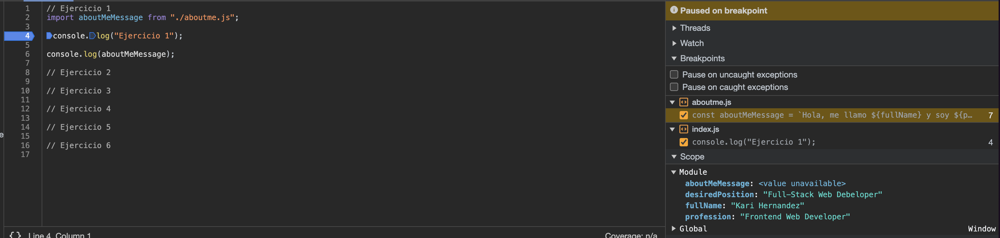
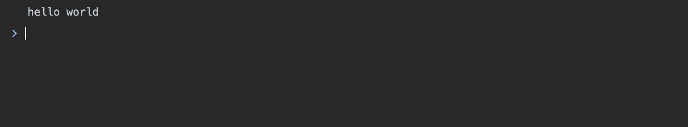
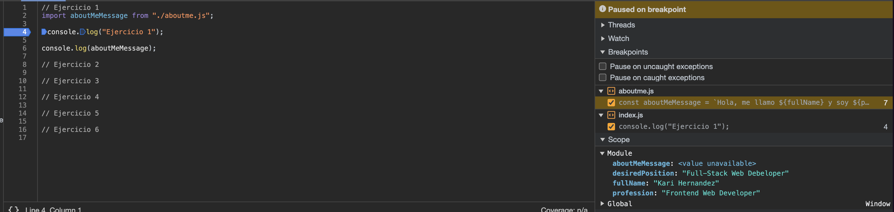
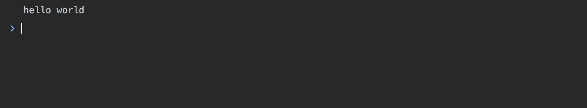
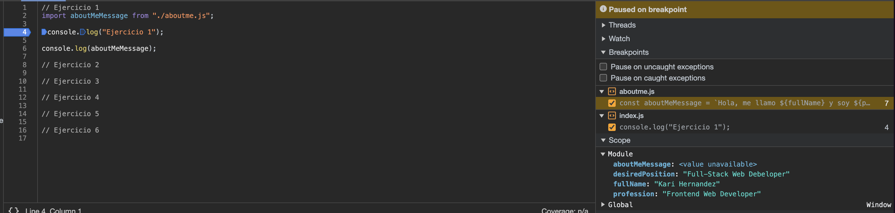
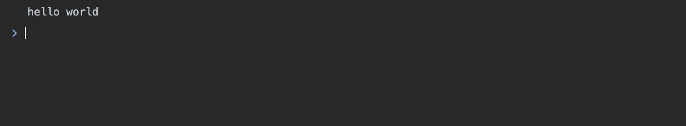

< Back
 



Actividad 1
Actividades Sesión Principiante
Ejercicio 1
- Crea un nuevo fork del proyecto del curso
- Crea un nuevo archivo llamado
aboutme.js - Crea un script en ese fichero con tres variables (elige un nombre descriptivo para cada una). La primera almacenará tu nombre y apellidos, la segunda tu profesión y la tercera el puesto que querrías desempeñar o el que desempeñas actualmente.
-
Crea una nueva variable que almacene una cadena, que mediante
template literals
incluya esta frase con las variables:
Hola, me llamo [variable del nombre] y me dedico a [variable profresión]. Estoy cursando este Máster porque me gustaría trabajar en [variable del puesto] - Muestra por pantalla esta última variable.
-
Importa tu fichero
aboutme.jsen el ficheroindex.jsen la parte del Ejercicio 1 antes delconsole.log("Ej 1").
Ejercicio 2
Se requiere un navegador con herramientas de desarrollador:
-
Abre el navegador seleccionado y dirígete a la sección de
Actividades/Actividad 1. - Abre la sección de Sources en las herramientas web, dirígete al fichero aboutme.js que creaste en la sección anterior y añade unos cuantos breakpoints en el script que has creado.
- Añade un breakpoint más en
console.log(“Ej 1”). -
¿Qué se ejecuta antes, la llamada a
console.log()o el contenido del ficheroaboutme.js? ¿Por qué? - El contenido del fichero aboutme.js se ejecuta primero, ya que el orden de ejecución suele seguir la secuencia en la que se encuentran las líneas de código en el archivo y el flujo de ejecución natural del programa, en este caso el import del fichero estaba primero que el console.log.


// Ejercicio 1
console.log("Ejercicio 1");
// Ejercicio 2
// Ejercicio 3
// Ejercicio 4
// Ejercicio 5
// Ejercicio 6
Ejercicio 3
- Programa un script que imprima todos los números del 1 al 100 que sean divisibles por 7.
Ejercicio 4
- Siguiendo el ejemplo anterior, imagina que has usado un bucle como este:
for(var i = 0; i < 101; i++) {
// Solución
}
console.log(i);
-
¿Qué valor tendrá la variable
ial finalizar el bucle? ¿Por qué? ¿Habría alguna forma de evitar que la variableise declare de forma global? - 101, Por que es una variable global ya que usamos var para declararla
- Usando 'let' en vez de 'var' para declararla. Al utilizar let, i ya no sería accesible fuera del bucle y el intento de imprimir i después del bucle resultaría en un error de referencia (i is not defined).
Ejercicio 5
-
¿Cuáles son las diferencias entre ejecutar un fichero JavaScript en
un navegador web en formato
<script>y en formato<script type=”module”>?. Busca documentación para enumerar los principales comportamientos de ambas. -
<script>(sin tipo especificado o contype="text/javascript") - Carga Sincrónica: Los scripts se cargan y ejecutan de manera síncrona. Esto significa que si hay varios scripts, el navegador los ejecutará en el orden en que se encuentran en el HTML, y el procesamiento de la página se detiene hasta que se complete la ejecución del script.
-
Ámbito Global: Las variables y funciones declaradas en un script
cargado con
<script>se añaden al ámbito global (a menos que se utilicen estrategias específicas para evitarlo), lo que puede provocar posibles conflictos entre variables con el mismo nombre en diferentes scripts. - No hay importaciones/exportaciones: No admite las declaraciones import y export de ES6 para importar o exportar módulos. Esto significa que no se pueden usar módulos ECMAScript nativos, lo que limita la modularidad y reutilización de código.
<script type="module>-
Carga Asincrónica: Los scripts tipo módulo (
<script type="module">) se cargan de manera asincrónica por defecto. Esto permite que la página continúe cargándose mientras los módulos se descargan en segundo plano. - Ámbito de Módulo: Los módulos tienen su propio ámbito y no añaden variables o funciones al ámbito global por defecto. Esto ayuda a evitar colisiones de nombres y a mantener la encapsulación del código.
- Importaciones/Exportaciones: Admite las declaraciones import y export de ES6 para importar y exportar módulos. Esto facilita la modularidad y reutilización del código, permitiendo la estructuración y organización del código en módulos independientes.
- Política de CORS: Los scripts de módulos tienen una política de CORS más estricta en comparación con los scripts tradicionales. Los navegadores pueden rechazar la carga de módulos desde orígenes no permitidos por la política de CORS.
Ejercicio 6
-
Crea un objeto llamado formatter con un atributo,
que llamaremos prefix, que tendrá de valor
“Hello “, y un método que llamaremos append, que imprimirá la concatenación entre el atributo prefix y la cadena que pasemos como argumento en el método.
formatter.append(“World”) // Result: Hello World
- Una vez el objeto esté creado añade mediante el atributo prototype (buscad en la documentación) otro método que acepte también un solo argumento e imprima esa misma cadena en minúsculas.
formatter.toLowerString(“I’m Lucas”) // Result: i’m lucas